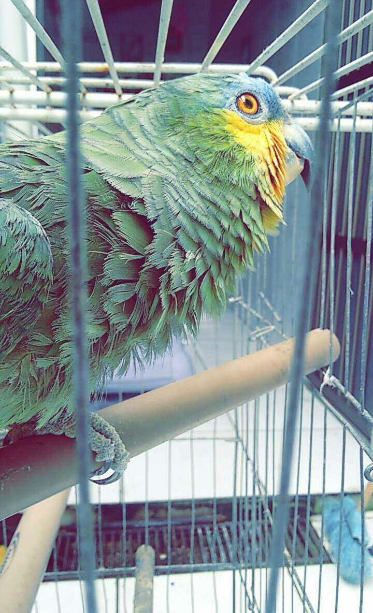
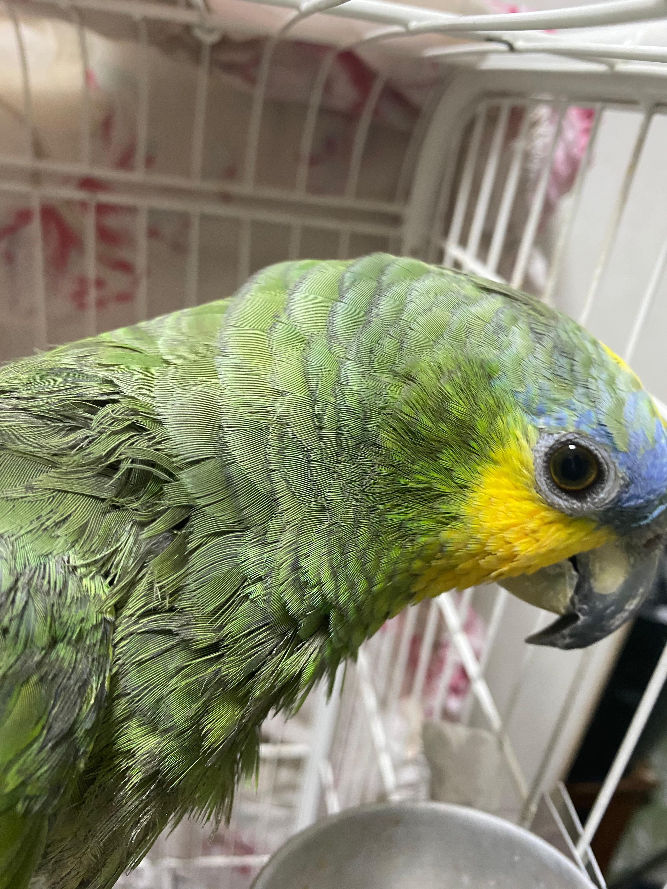
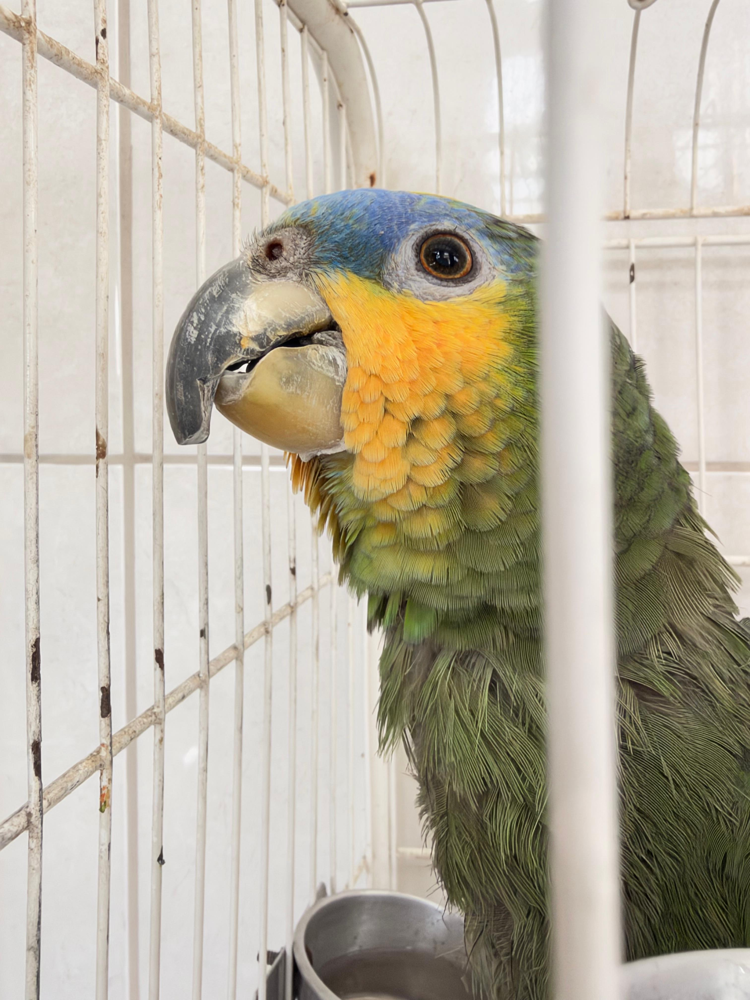
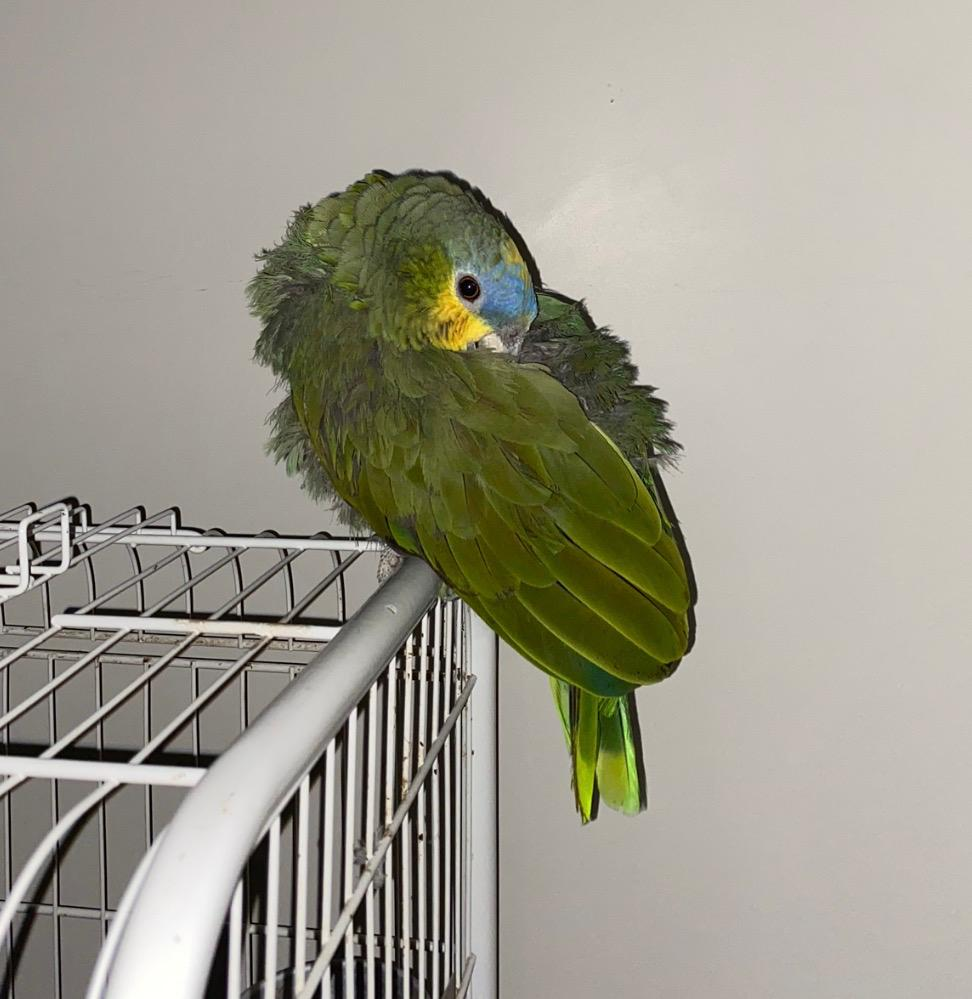
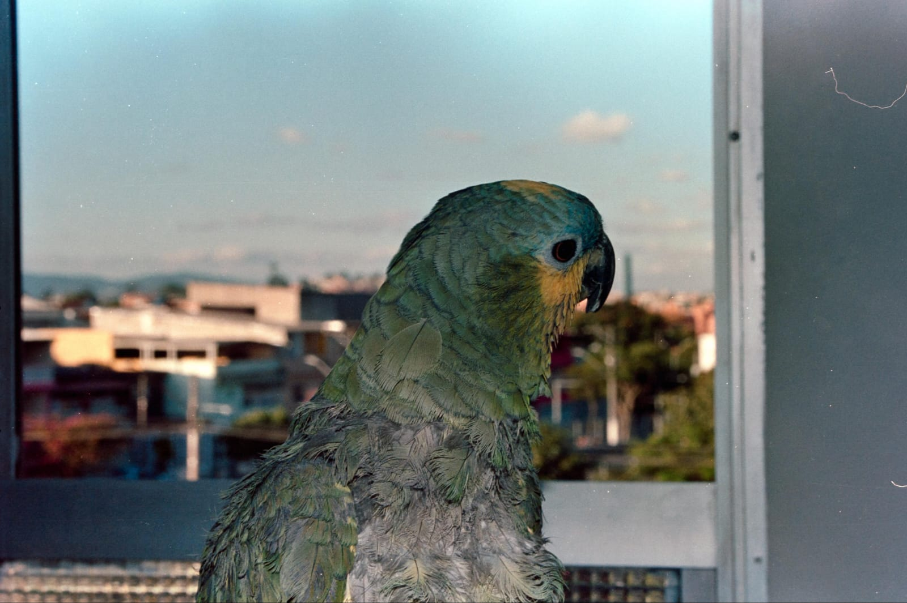

♡ · ♡ · ♡
Algumas passagens duram pouco, mas deixam marcas que ficam para sempre.
Há cerca de 30 anos, Pirilampo foi encontrado com uma das asas cortadas. Precisando de cuidados, ele ganhou uma nova oportunidade quando chegou à nossa família, que decidiu acolhê-lo e oferecer um lar cheio de carinho.


Pirilampo não foi o único a encontrar uma segunda chance por aqui. Nossa casa também é lar de Paçoca, Pitaya e Atum, cada um com sua própria história de adoção. Todos chegaram precisando de algum tipo de cuidado, e tivemos a oportunidade de fazer a diferença na vida de cada um.
Hoje, depois de três décadas, não consigo imaginar minha casa sem a presença do Pirilampo e dos outros animais. Brinquedos, pelos e penas já fazem parte da nossa rotina e das nossas lembranças. Afinal, adotar não transforma apenas a vida de um animal, mas também a de quem escolhe acolhê-lo.


♡ · ♡ · ♡
Por cada dia, cada olhar e cada lembrança.